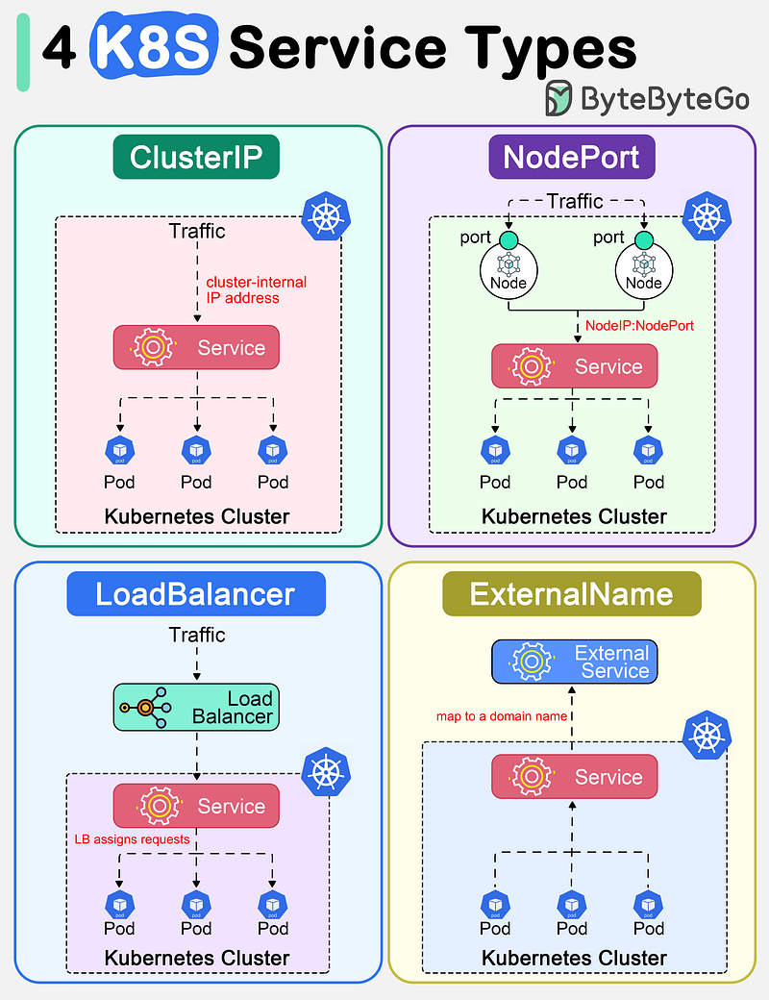

In the first part, I will talk about Kubernetes Service, Ingress, and Service Discovery
Kubernetes Services!
In Kubernetes, a Service is a method for exposing a network application that is running as one or more Pods in your cluster. So how many types of Services? There are 4 types:

Service type, there are 4 types of service:
-
ClusterIP: Exposes the Service on a cluster-internal IP. Choosing this value makes the Service only reachable from within the cluster. This is the default ServiceType ( if you don't define the type, it will be ClusterIP)
-
NodePort: Exposes the Service on each Node’s IP at a static port (the NodePort). A ClusterIP Service, to which the NodePort Service routes, is automatically created. You’ll be able to contact the NodePort Service, from outside the cluster, by requesting
<NodeIP>:<NodePort>. Default port range:30000-32767 -
LoadBalancer: Exposes the Service externally using a cloud provider’s load balancer. NodePort and ClusterIP Services, to which the external load balancer routes, are automatically created.
- If you're running Kubernetes on a cloud provider that supports load balancer services (like AWS, GCP, Azure), then type: LoadBalancer will work as expected.
- If you're running Kubernetes on-premises or on a cloud provider that doesn't support load balancers, type: LoadBalancer will not work.
-
ExternalName: Maps the Service to the contents of the externalName field (e.g.
my.database.example.com), by returning a CNAME record with its value.
Let's dive deep into each section with the use case and example with the manifest so you can imagine it easily!
1. ClusterIP:
I assume you have Redis pod already and you want to access it from the backend server, The backend server is in the same k8s cluster.
- Manifest demo:
apiVersion: v1
kind: Service
metadata:
name: redis-test-clusterip
namespace: redis-standalone
spec:
type: ClusterIP
ports:
- port: 6379
targetPort: 6379
selector:
app: redis-test
- Access it with FQDN:
redis-test-clusterip.redis-standalone.svc.cluster.local:6379 - Explains: Fully qualified domain name (FQDN) of the Service. The FQDN takes the form
service-name.namespace.svc.cluster.local, where:service-nameis the name of the Service.namespace-nameis the namespace in which the Service resides.svcis a static value.cluster.localis the default domain for the cluster. This can be customized during cluster setup.
- The DNS service in Kubernetes (like CoreDNS or kube-dns) is responsible for resolving this FQDN to the appropriate Service. When you create a Service, Kubernetes automatically creates a corresponding DNS record. This allows Pods in the cluster to access the Service using the FQDN.
2. NodePort:
From my experience, this is the most i used when i began with k8s service expose ( that's a time i had no idea about ingress xD), so how i used it.
Service can be accessed from any node directly with <node-ip>:<port>. This is mostly used for quick access without running port-forward or any other action and ofc you have to allow access port from the server to your IP address, i mean the firewall!
- For adding backend to Haproxy
backend http_backend-name-here
mode http
option forwardfor header X-Client-RIP
balance roundrobin
server 10.0.0.1:32332 10.0.0.1:32332 check inter 4000 rise 2 fall 10
server 10.0.0.2:32332 10.0.0.2:32332 check inter 4000 rise 2 fall 10
- Used it as a target for Upstream in Kong - API Gateway

3. LoadBalancer:
At this time, i don't use K8s in the cloud yet. I will update you when i finish my lab with EKS/GKE later.
4. ExternalName
When i learned this for the first time or second time, i didn't really know why it gonna being used, but after several times i got this.
-
For consistency, when you change the domain of an external name, it takes only 5–10 seconds to update in the container without restarting. You don't have to restart the container to take the changes, if you mount config from ConfigMap or Secret, you will have to restart pod xD.
-
Leverages K8S internal DNS resolution, you don't need any external DNS server. K8S acts as a DNS Server at this point xD.
-
Better integration with k8s network policies and service management. I think you will not understand this sentence like me xD. So i asked Copilot to explain.
-
Network Policies: Kubernetes network policies allow you to control the communication between Pods and Services within the cluster. However, ExternalName Services do not directly interact with Pods; they map to external DNS names. This means that network policies within the cluster do not apply to the external services directly. Instead, you need to manage network policies at the cluster boundary or use other mechanisms to secure communication with external services.
-
Service Management: Kubernetes provides robust service management features, such as service discovery, load balancing, and DNS resolution. ExternalName Services leverage Kubernetes' DNS resolution capabilities to provide a seamless way to access external services using a consistent internal DNS name. This allows for better integration and management of external services within the Kubernetes ecosystem, as you can reference external services using Kubernetes Service names.
-
-
Centralizes the configuration of external dependencies within K8S.
-
Example manifest:
apiVersion: v1
kind: Service
metadata:
name: my-external-service
namespace: sysadmin
spec:
type: ExternalName
externalName: my.database.example.com
Ingress!
Mostly i will talk only about Nginx ingress!
Quick start
It will be a little hard to summarize ingress in some words, but i will try my best to explain.
Kubernetes Ingress is a resource that allows you to manage external access to your services, typically HTTP ( It does support TLS/SSL). It acts as a reverse proxy, routing traffic from a DNS name to the appropriate services within your cluster.
- DNS: Points to the Ingress controller (proxy server).
-
Ingress Controller: Forwards traffic to the configured services based on rules defined in the Ingress resource.
-
Example manifest and haproxy stand before Ingress:
apiVersion: networking.k8s.io/v1
kind: Ingress
metadata:
name: example-ingress
namespace: default
spec:
rules:
- host: example.com
http:
paths:
- path: /
pathType: Prefix
backend:
service:
name: example-service
port:
number: 80
Haproxy config
backend http_example.com
mode http
option forwardfor header X-Client-RIP
balance roundrobin
server 10.0.0.1:80 10.0.0.1:80 check inter 1000 rise 2 fall 10
server 10.0.0.2:80 10.0.0.2:80 check inter 1000 rise 2 fall 10
Explain: DNS will point the domain to the Haproxy server. Haproxy will forward traffic to the Ingress Controller ( 10.0.0.1 and 10.0.0.2 are Ingress Controller). Why do i know port 80 is being used? Because i installed nginx ingress as Daemonset, in default it used hostPort in the ports section of Daemonset
name: rke2-ingress-nginx-controller
ports:
- containerPort: 80
hostPort: 80
name: http
protocol: TCP
- containerPort: 443
hostPort: 443
name: https
protocol: TCP
- containerPort: 8443
name: webhook
protocol: TCP
And why do i use 80 not 443?, for not double encrypt, because in Haproxy it redirected requests to HTTPS, so extra SSL is not necessary and may increase extra CPU load.
Ingress workflows:
- Ingress has routing rules to service
- Ingress flows:
1. Client Request: A client sends a request to http://example.com/api.
2. Ingress Controller: The request is received by the Ingress Controller.
3. Ingress Resource: The Ingress Controller looks up the Ingress resource to find the routing rules for example.com/api and determines the corresponding Service.
4. Service: The request is forwarded to the Service named my-service.
5. Endpoint: The Service finds the endpoints (IP addresses of Pods) associated with it and selects one based on its load balancing policy.
6. Pod: The request is routed to the selected Pod running the application.
Some common error scenarios of nginx ingress
1. Missing annotation rewrite-target - I'm assuming the ingress controller and backend service still running. This will return 404 errors.
-
Specifically, the Ingress rule is set to match requests to the path /test, but without the rewrite-target annotation, the request path is not modified before being sent to the backend service.
-
Why it will return a 404 error?:
- Request Path Mismatch: The Ingress rule matches requests to example.com/test and forwards them to the backend-service on port 80.
- Backend Service Path Handling: The backend service expects requests to be at the root path /, but the Ingress controller forwards the request with the original path /test
- 404 Not Found: Since the backend service does not have a handler for the /test path, it returns a 404 Not Found error.
# misconfiguration
apiVersion: networking.k8s.io/v1
kind: Ingress
metadata:
name: example-ingress
namespace: test1
spec:
ingressClassName: nginx
rules:
- host: example.com
http:
paths:
- path: /test
pathType: Prefix
backend:
service:
name: backend-service
port:
number: 80
# Correct configuration with the rewrite-target annotation
apiVersion: networking.k8s.io/v1
kind: Ingress
metadata:
name: example-ingress
namespace: test1
annotations:
nginx.ingress.kubernetes.io/rewrite-target: "/"
spec:
ingressClassName: nginx
rules:
- host: example.com
http:
paths:
- path: /test
pathType: Prefix
backend:
service:
name: backend-service
port:
number: 80
2. Other issues related to 404
-
Incorrect Path Configuration: If the pathType is set to Exact but the request path does not match exactly, it will return a 404. For example, if the path is /test and the request is for /test/, it will not match. Note that using the Prefix pathType allows /test to match /test/ and its sub-paths, which may avoid this issue.
-
Service Name Mismatch: If the service name specified in the Ingress does not match any existing service, the Ingress will not be able to route the traffic correctly, resulting in a 404 error.
-
Namespace Mismatch: If the Ingress resource is in a different namespace than the service it is trying to route to, it will not find the service and return a 404.
-
Ingress Controller Not Running: If the NGINX Ingress Controller itself is not running or not properly configured, traffic will not be routed. This might result in a 404 error if another Ingress Controller handles the traffic and does not recognize the configuration. Otherwise, the traffic may fail to reach the cluster altogether.
-
DNS Issues: If the DNS is not properly configured to point to the Ingress Controller, the requests will not reach the Ingress. This would typically result in a DNS resolution error, not a 404. A 404 might occur only if DNS resolves to the Ingress Controller but the Ingress rules are not properly configured.
3. Other possible errors 400,502,503...
It will be way too long to include, but pretty useful in case you have to debug: Github Gist
Service Discovery and DNS
Here's a concise and clear explanation of Service Discovery in Kubernetes:
-
Services and Endpoints:
-
A Service in Kubernetes provides a stable IP and DNS name to access a group of Pods (e.g., from a Deployment).
-
When a Service is created, Kubernetes automatically creates an Endpoint object that maps the Service to the IPs of its associated Pods.
-
If your Deployment has 2 Pods, the Endpoint will list 2 IPs of the pod. This updates dynamically when Pods are added, removed, or replaced.
-
K8S restricts endpoints to 1000.
-
-
DNS-based Discovery:
-
Kubernetes automatically sets up a DNS name for each Service. For example, a Service named
my-servicein thedefaultnamespace will be available atmy-service.default.svc.cluster.local. -
Any Pod in the cluster can use this DNS name to connect to the Service, regardless of where the Pods are running.
-
-
Environment Variables:
-
When a Pod is started, Kubernetes injects environment variables into the container with information about Services in the same namespace.
-
All Services in the same namespace that exists before the Pod starts will have their information injected into the Pod's environment variables. These environment variables will include:
<SERVICE_NAME>_SERVICE_HOST: The Service's cluster IP. <SERVICE_NAME>_SERVICE_PORT: The Service's port. -
You can check by getting all services and running the command
envin a container.
-
ERROR_499_PORT_80_TCP_PORT=80
ERROR_499_PORT_80_TCP_PROTO=tcp
ERROR_500_SERVICE_HOST=10.43.227.32
ERROR_502_SERVICE_HOST=10.43.64.240
ERROR_503_SERVICE_HOST=10.43.196.86
ERROR_499_PORT_80_TCP=tcp://10.43.116.35:80
ERROR_504_SERVICE_HOST=10.43.6.79
ERROR_500_PORT=tcp://10.43.227.32:80
ERROR_500_SERVICE_PORT=80
ERROR_502_PORT=tcp://10.43.64.240:80
ERROR_502_SERVICE_PORT=80
ERROR_503_PORT=tcp://10.43.196.86:80
ERROR_503_SERVICE_PORT=80
ERROR_504_PORT=tcp://10.43.6.79:80
- With the following services.
# kubectl get svc
NAME TYPE CLUSTER-IP EXTERNAL-IP PORT(S) AGE
error-499 ClusterIP 10.43.116.35 <none> 80/TCP 2d21h
error-500 ClusterIP 10.43.227.32 <none> 80/TCP 2d21h
error-502 ClusterIP 10.43.64.240 <none> 80/TCP 2d21h
error-503 ClusterIP 10.43.196.86 <none> 80/TCP 2d21h
error-504 ClusterIP 10.43.6.79 <none> 80/TCP 2d21h
Summary:
- Endpoint links Services to Pod IPs and dynamically updates with Pod changes.
- Pods can discover Services using DNS names or environment variables.
- Kubernetes automatically handles traffic routing and load balancing for Services. This ensures seamless communication and discovery between applications running in your cluster!
How DNS Resolv addresses
how DNS resolution works in Kubernetes based on resolv.conf the behavior for resolving my-app:
Key Points:
-
/etc/resolv.conf:- The
searchline specifies the DNS search domains that will be appended to any domain you try to resolve (if it doesn't have enough dots to be considered fully qualified). - The
nameserveris the IP of the Kubernetes DNS server (like CoreDNS or kube-dns). options ndots:5means a domain must contain at least 5 dots to be considered fully qualified (e.g.,my-app.default.svc.cluster.local).
- The
-
How DNS Resolves
my-app:- When you type
my-app, DNS will append the search domains in order until a match is found or all options are exhausted.
For
my-app: -my-app.default.svc.cluster.local→ First try (becausedefaultis the Pod's namespace). -my-app.svc.cluster.local→ If the first fails, check here. -my-app.cluster.local→ If no match, check here. - Finally, it tries external DNS if none match. - When you type
-
In Your Example (
my-appin thedefaultnamespace):- When you type
my-app, Kubernetes DNS will resolve it to the Servicemy-appin the same namespace (default) because of thedefault.svc.cluster.localsearch path.
- When you type
-
For different namespace (argocd):
cat /etc/resolv.conf
search argocd.svc.cluster.local svc.cluster.local cluster.local
nameserver 10.43.0.10
options ndots:5
Key Takeaway:
if the Service is named my-app and in the same namespace (default), typing my-app will resolve to my-app.default.svc.cluster.local. This is thanks to the search domain and Kubernetes DNS configuration.
CoreDNS:
- It watches K8S Api for new services, it will creates a DNS record
More notes about the Service:
- When a Service is created with a selector, Kubernetes automatically creates an Endpoints object and populates it with the IPs and ports of Pods that match the selector. Whenever the set of Pods matching the selector changes, the Endpoints object is automatically updated.
Conclusion:
- with the help of chatGPT, some explanations are much better
- re-memorized for my knowledge about k8s networking
What's next in part 2?
- CNI
- Cilium
- And more...